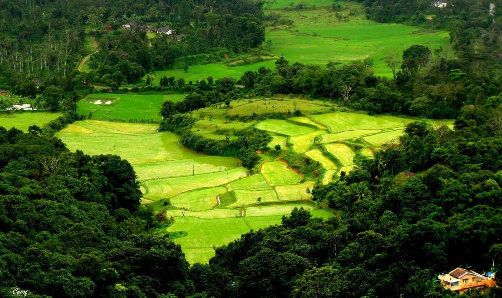

Coorg "The Scotland of India"
Coorg
Located amidst imposing mountains in Karnataka with a perpetually misty landscape, Coorg is a popular coffee producing hill station. It is popular for its beautiful green hills and the streams cutting right through them. It also stands as a popular destination because of its culture and people. The Kodavas, a local clan specializing in martial arts, are especially notable for their keen hospitality.
Coorg, officially known as Kodagu, is the most affluent hill station in Karnataka. It is well known for its breathtakingly exotic scenery and lush greenery. Forest covered hills, spice and coffee plantations only add to the landscape. Madikeri is the region's centre point with all transportation for getting around starting from here. On a visit to Coorg, cover the beautiful towns like Virajpet, Kushalnagar, Gonikoppal, Pollibetta, and Somwarpet, and experience the beautiful concept of "homestays" to make your experience more memorable!
Major Tourist Attractions:
- Abbey Falls
- Raja's Seat
- Coffee Plantations in Coorg
- Golden Temple (Namdroling Monastery)
- Tadiandamol Peak
- Iruppu Falls
Recommended Tours

Himachal Pradesh

Uttarakhand

Gujarat
How to Reach: Coorg is only accessed by road. There are many government and private buses going to Coorg from the major cities in Karnataka. Coorg does not have its own railway station, and the nearest one is at Mysore (120 km). The closest airport is at Mangalore (152 km), from where the tourists can head to Coorg by bus or taxi.
Best Time to Visit: The best time to visit Coorg is from the months of September to June as the weather is pleasant with no rain and it is not too hot either. However, if you want to go trekking, October to March is the best time to visit Coorg as this is the perfect weather if you wish to spend more time outdoors. During the monsoon months of late July and August, it is best to avoid visiting due to heavy rainfall and landslides.
Watch on YouTube: